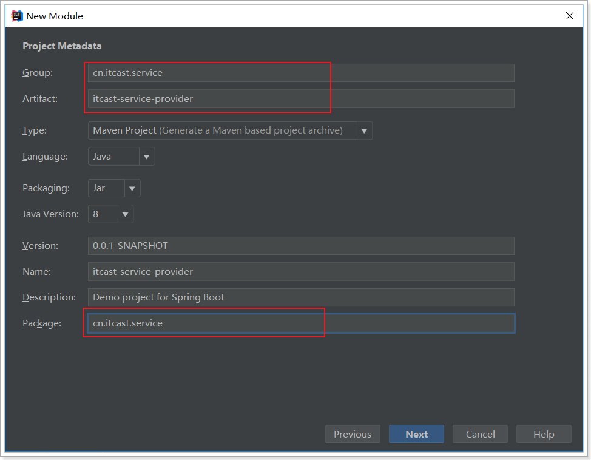
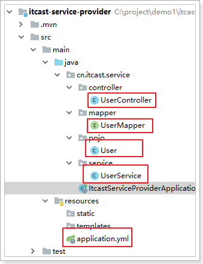
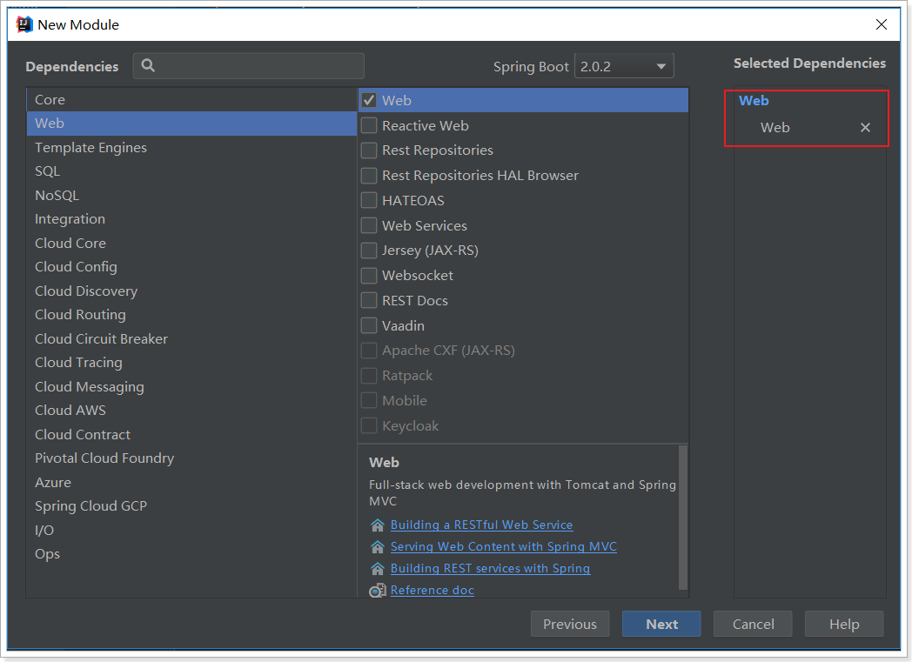

了解系统架构的演变
了解RPC与Http的区别
知道什么是SpringCloud
1.系统架构演变
随着互联网的发展，网站应用的规模不断扩大。需求的激增，带来的是技术上的压力。系统架构也因此不断的演进、升级、迭代。从单一应用，到垂直拆分，到分布式服务，到SOA，以及现在火热的微服务架构，还有在Google带领下来势汹涌的Service Mesh。我们到底是该乘坐微服务的船只驶向远方，还是偏安一隅得过且过？
其实生活不止眼前的苟且，还有诗和远方。所以我们今天就回顾历史，看一看系统架构演变的历程；把握现在，学习现在最火的技术架构；展望未来，争取成为一名优秀的Java工程师。
1.1.集中式架构
当网站流量很小时，只需一个应用，将所有功能都部署在一起，以减少部署节点和成本。此时，用于简化增删改查工作量的数据访问框架(ORM)是影响项目开发的关键。

存在的问题：
- 代码耦合，开发维护困难
- 无法针对不同模块进行针对性优化
- 无法水平扩展
- 单点容错率低，并发能力差
1.2.垂直拆分
当访问量逐渐增大，单一应用无法满足需求，此时为了应对更高的并发和业务需求，我们根据业务功能对系统进行拆分：

优点：
- 系统拆分实现了流量分担，解决了并发问题
- 可以针对不同模块进行优化
- 方便水平扩展，负载均衡，容错率提高
缺点：
- 系统间相互独立，会有很多重复开发工作，影响开发效率
1.3.分布式服务
当垂直应用越来越多，应用之间交互不可避免，将核心业务抽取出来，作为独立的服务，逐渐形成稳定的服务中心，使前端应用能更快速的响应多变的市场需求。此时，用于提高业务复用及整合的分布式调用是关键。

优点：
- 将基础服务进行了抽取，系统间相互调用，提高了代码复用和开发效率
缺点：
- 系统间耦合度变高，调用关系错综复杂，难以维护
1.4.流动计算架构（SOA）
SOA ：面向服务的架构
当服务越来越多，容量的评估，小服务资源的浪费等问题逐渐显现，此时需增加一个调度中心基于访问压力实时管理集群容量，提高集群利用率。此时，用于提高机器利用率的资源调度和治理中心(SOA)是关键

以前出现了什么问题？
- 服务越来越多，需要管理每个服务的地址
- 调用关系错综复杂，难以理清依赖关系
- 服务过多，服务状态难以管理，无法根据服务情况动态管理
服务治理要做什么？
- 服务注册中心，实现服务自动注册和发现，无需人为记录服务地址
- 服务自动订阅，服务列表自动推送，服务调用透明化，无需关心依赖关系
- 动态监控服务状态监控报告，人为控制服务状态
缺点：
- 服务间会有依赖关系，一旦某个环节出错会影响较大
- 服务关系复杂，运维、测试部署困难，不符合DevOps思想
1.5.微服务
前面说的SOA，英文翻译过来是面向服务。微服务，似乎也是服务，都是对系统进行拆分。因此两者非常容易混淆，但其实却有一些差别：
微服务的特点：
- 单一职责：微服务中每一个服务都对应唯一的业务能力，做到单一职责
- 微：微服务的服务拆分粒度很小，例如一个用户管理就可以作为一个服务。每个服务虽小，但“五脏俱全”。
- 面向服务：面向服务是说每个服务都要对外暴露Rest风格服务接口API。并不关心服务的技术实现，做到与平台和语言无关，也不限定用什么技术实现，只要提供Rest的接口即可。
- 自治：自治是说服务间互相独立，互不干扰
- 团队独立：每个服务都是一个独立的开发团队，人数不能过多。
- 技术独立：因为是面向服务，提供Rest接口，使用什么技术没有别人干涉
- 前后端分离：采用前后端分离开发，提供统一Rest接口，后端不用再为PC、移动段开发不同接口
- 数据库分离：每个服务都使用自己的数据源
- 部署独立，服务间虽然有调用，但要做到服务重启不影响其它服务。有利于持续集成和持续交付。每个服务都是独立的组件，可复用，可替换，降低耦合，易维护
微服务结构图：

2.服务调用方式
2.1.RPC和HTTP
无论是微服务还是SOA，都面临着服务间的远程调用。那么服务间的远程调用方式有哪些呢？
常见的远程调用方式有以下2种：
RPC：Remote Produce Call远程过程调用，类似的还有RMI。自定义数据格式，基于原生TCP通信，速度快，效率高。早期的webservice，现在热门的dubbo，都是RPC的典型代表
Http：http其实是一种网络传输协议，基于TCP，规定了数据传输的格式。现在客户端浏览器与服务端通信基本都是采用Http协议，也可以用来进行远程服务调用。缺点是消息封装臃肿，优势是对服务的提供和调用方没有任何技术限定，自由灵活，更符合微服务理念。
现在热门的Rest风格，就可以通过http协议来实现。
如果你们公司全部采用Java技术栈，那么使用Dubbo作为微服务架构是一个不错的选择。
相反，如果公司的技术栈多样化，而且你更青睐Spring家族，那么SpringCloud搭建微服务是不二之选。在我们的项目中，我们会选择SpringCloud套件，因此我们会使用Http方式来实现服务间调用。
2.2.Http客户端工具
既然微服务选择了Http，那么我们就需要考虑自己来实现对请求和响应的处理。不过开源世界已经有很多的http客户端工具，能够帮助我们做这些事情，例如：
- HttpClient
- OKHttp
- URLConnection
接下来，不过这些不同的客户端，API各不相同
2.3.Spring的RestTemplate
Spring提供了一个RestTemplate模板工具类，对基于Http的客户端进行了封装，并且实现了对象与json的序列化和反序列化，非常方便。RestTemplate并没有限定Http的客户端类型，而是进行了抽象，目前常用的3种都有支持：
- HttpClient
- OkHttp
- JDK原生的URLConnection（默认的）
我们导入课前资料提供的demo工程：

首先在项目中注册一个RestTemplate对象，可以在启动类位置注册：
@SpringBootApplication
public class HttpDemoApplication {
public static void main(String[] args) {
SpringApplication.run(HttpDemoApplication.class, args);
}
@Bean
public RestTemplate restTemplate() {
return new RestTemplate();
}
}
在测试类中直接@Autowired注入：
@RunWith(SpringRunner.class)
@SpringBootTest(classes = HttpDemoApplication.class)
public class HttpDemoApplicationTests {
@Autowired
private RestTemplate restTemplate;
@Test
public void httpGet() {
// 调用springboot案例中的rest接口
User user = this.restTemplate.getForObject("http://localhost/user/1", User.class);
System.out.println(user);
}
}
- 通过RestTemplate的getForObject()方法，传递url地址及实体类的字节码，RestTemplate会自动发起请求，接收响应，并且帮我们对响应结果进行反序列化。

学习完了Http客户端工具，接下来就可以正式学习微服务了。
3.初识SpringCloud
微服务是一种架构方式，最终肯定需要技术架构去实施。
微服务的实现方式很多，但是最火的莫过于Spring Cloud了。为什么？
- 后台硬：作为Spring家族的一员，有整个Spring全家桶靠山，背景十分强大。
- 技术强：Spring作为Java领域的前辈，可以说是功力深厚。有强力的技术团队支撑，一般人还真比不了
- 群众基础好：可以说大多数程序员的成长都伴随着Spring框架，试问：现在有几家公司开发不用Spring？SpringCloud与Spring的各个框架无缝整合，对大家来说一切都是熟悉的配方，熟悉的味道。
- 使用方便：相信大家都体会到了SpringBoot给我们开发带来的便利，而SpringCloud完全支持SpringBoot的开发，用很少的配置就能完成微服务框架的搭建
3.1.简介
SpringCloud是Spring旗下的项目之一，官网地址：http://projects.spring.io/spring-cloud/
Spring最擅长的就是集成，把世界上最好的框架拿过来，集成到自己的项目中。
SpringCloud也是一样，它将现在非常流行的一些技术整合到一起，实现了诸如：配置管理，服务发现，智能路由，负载均衡，熔断器，控制总线，集群状态等等功能。其主要涉及的组件包括：
- Eureka：服务治理组件，包含服务注册中心，服务注册与发现机制的实现。（服务治理，服务注册/发现）
- Zuul：网关组件，提供智能路由，访问过滤功能
- Ribbon：客户端负载均衡的服务调用组件（客户端负载）
- Feign：服务调用，给予Ribbon和Hystrix的声明式服务调用组件 （声明式服务调用）
- Hystrix：容错管理组件，实现断路器模式，帮助服务依赖中出现的延迟和为故障提供强大的容错能力。(熔断、断路器，容错)
架构图：

以上只是其中一部分。
3.2.版本
因为Spring Cloud不同其他独立项目，它拥有很多子项目的大项目。所以它的版本是版本名+版本号 （如Angel.SR6）。
版本名：是伦敦的地铁名
版本号：SR（Service Releases）是固定的 ,大概意思是稳定版本。后面会有一个递增的数字。
所以 Edgware.SR3就是Edgware的第3个Release版本。

我们在项目中，会是以Finchley的版本。
其中包含的组件，也都有各自的版本，如下表：
| Component | Edgware.SR3 | Finchley.RC1 | Finchley.BUILD-SNAPSHOT |
|---|---|---|---|
| spring-cloud-aws | 1.2.2.RELEASE | 2.0.0.RC1 | 2.0.0.BUILD-SNAPSHOT |
| spring-cloud-bus | 1.3.2.RELEASE | 2.0.0.RC1 | 2.0.0.BUILD-SNAPSHOT |
| spring-cloud-cli | 1.4.1.RELEASE | 2.0.0.RC1 | 2.0.0.BUILD-SNAPSHOT |
| spring-cloud-commons | 1.3.3.RELEASE | 2.0.0.RC1 | 2.0.0.BUILD-SNAPSHOT |
| spring-cloud-contract | 1.2.4.RELEASE | 2.0.0.RC1 | 2.0.0.BUILD-SNAPSHOT |
| spring-cloud-config | 1.4.3.RELEASE | 2.0.0.RC1 | 2.0.0.BUILD-SNAPSHOT |
| spring-cloud-netflix | 1.4.4.RELEASE | 2.0.0.RC1 | 2.0.0.BUILD-SNAPSHOT |
| spring-cloud-security | 1.2.2.RELEASE | 2.0.0.RC1 | 2.0.0.BUILD-SNAPSHOT |
| spring-cloud-cloudfoundry | 1.1.1.RELEASE | 2.0.0.RC1 | 2.0.0.BUILD-SNAPSHOT |
| spring-cloud-consul | 1.3.3.RELEASE | 2.0.0.RC1 | 2.0.0.BUILD-SNAPSHOT |
| spring-cloud-sleuth | 1.3.3.RELEASE | 2.0.0.RC1 | 2.0.0.BUILD-SNAPSHOT |
| spring-cloud-stream | Ditmars.SR3 | Elmhurst.RELEASE | Elmhurst.BUILD-SNAPSHOT |
| spring-cloud-zookeeper | 1.2.1.RELEASE | 2.0.0.RC1 | 2.0.0.BUILD-SNAPSHOT |
| spring-boot | 1.5.10.RELEASE | 2.0.1.RELEASE | 2.0.0.BUILD-SNAPSHOT |
| spring-cloud-task | 1.2.2.RELEASE | 2.0.0.RC1 | 2.0.0.RELEASE |
| spring-cloud-vault | 1.1.0.RELEASE | 2.0.0.RC1 | 2.0.0.BUILD-SNAPSHOT |
| spring-cloud-gateway | 1.0.1.RELEASE | 2.0.0.RC1 | 2.0.0.BUILD-SNAPSHOT |
| spring-cloud-openfeign | 2.0.0.RC1 | 2.0.0.BUILD-SNAPSHOT |

接下来，我们就一一学习SpringCloud中的重要组件。
4.微服务场景模拟
首先，我们需要模拟一个服务调用的场景，搭建两个工程：zhangkx-service-provider（服务提供方）和zhangkx-service-consumer（服务调用方）。方便后面学习微服务架构
服务提供方：使用mybatis操作数据库，实现对数据的增删改查；并对外提供rest接口服务。
服务消费方：使用restTemplate远程调用服务提供方的rest接口服务，获取数据。
4.1.服务提供者
我们新建一个项目：zhangkx-service-provider，对外提供根据id查询用户的服务。
4.1.1.Spring脚手架创建工程
借助于Spring提供的快速搭建工具：

next–>填写项目信息：

next –> 添加web依赖：

添加mybatis依赖：

Next –> 填写项目位置：

生成的项目结构，已经包含了引导类（zhangkxServiceProviderApplication）：

依赖也已经全部自动引入：
<?xml version="1.0" encoding="UTF-8"?>
<project xmlns="http://maven.apache.org/POM/4.0.0" xmlns:xsi="http://www.w3.org/2001/XMLSchema-instance"
xsi:schemaLocation="http://maven.apache.org/POM/4.0.0 http://maven.apache.org/xsd/maven-4.0.0.xsd">
<modelVersion>4.0.0</modelVersion>
<groupId>uestc.zhangkx.service</groupId>
<artifactId>zhangkx-service-provider</artifactId>
<version>0.0.1-SNAPSHOT</version>
<packaging>jar</packaging>
<name>zhangkx-service-provider</name>
<description>Demo project for Spring Boot</description>
<parent>
<groupId>org.springframework.boot</groupId>
<artifactId>spring-boot-starter-parent</artifactId>
<version>2.0.6.RELEASE</version>
<relativePath/> <!-- lookup parent from repository -->
</parent>
<properties>
<project.build.sourceEncoding>UTF-8</project.build.sourceEncoding>
<project.reporting.outputEncoding>UTF-8</project.reporting.outputEncoding>
<java.version>1.8</java.version>
</properties>
<dependencies>
<dependency>
<groupId>org.springframework.boot</groupId>
<artifactId>spring-boot-starter-jdbc</artifactId>
</dependency>
<dependency>
<groupId>org.springframework.boot</groupId>
<artifactId>spring-boot-starter-web</artifactId>
</dependency>
<dependency>
<groupId>org.mybatis.spring.boot</groupId>
<artifactId>mybatis-spring-boot-starter</artifactId>
<version>1.3.2</version>
</dependency>
<dependency>
<groupId>mysql</groupId>
<artifactId>mysql-connector-java</artifactId>
<scope>runtime</scope>
</dependency>
<dependency>
<groupId>org.springframework.boot</groupId>
<artifactId>spring-boot-starter-test</artifactId>
<scope>test</scope>
</dependency>
<!-- 需要手动引入通用mapper的启动器，spring没有收录该依赖 -->
<dependency>
<groupId>tk.mybatis</groupId>
<artifactId>mapper-spring-boot-starter</artifactId>
<version>2.0.4</version>
</dependency>
</dependencies>
<build>
<plugins>
<plugin>
<groupId>org.springframework.boot</groupId>
<artifactId>spring-boot-maven-plugin</artifactId>
</plugin>
</plugins>
</build>
</project>
当然，因为要使用通用mapper，所以我们需要手动加一条依赖：
<dependency>
<groupId>tk.mybatis</groupId>
<artifactId>mapper-spring-boot-starter</artifactId>
<version>2.0.4</version>
</dependency>
非常快捷啊！
4.1.2.编写代码

4.1.2.1.配置
属性文件,这里我们采用了yaml语法，而不是properties：
server:
port: 8081
spring:
datasource:
url: jdbc:mysql://localhost:3306/mybatis #你学习mybatis时，使用的数据库地址
username: root
password: root
mybatis:
type-aliases-package: uestc.zhangkx.service.pojo
4.1.2.2.实体类
@Table(name = "tb_user")
public class User implements Serializable {
private static final long serialVersionUID = 1L;
@Id
@GeneratedValue(strategy = GenerationType.IDENTITY)
private Long id;
// 用户名
private String userName;
// 密码
private String password;
// 姓名
private String name;
// 年龄
private Integer age;
// 性别，1男性，2女性
private Integer sex;
// 出生日期
private Date birthday;
// 创建时间
private Date created;
// 更新时间
private Date updated;
public Long getId() {
return id;
}
public void setId(Long id) {
this.id = id;
}
public String getUserName() {
return userName;
}
public void setUserName(String userName) {
this.userName = userName;
}
public String getPassword() {
return password;
}
public void setPassword(String password) {
this.password = password;
}
public String getName() {
return name;
}
public void setName(String name) {
this.name = name;
}
public Integer getAge() {
return age;
}
public void setAge(Integer age) {
this.age = age;
}
public Integer getSex() {
return sex;
}
public void setSex(Integer sex) {
this.sex = sex;
}
public Date getBirthday() {
return birthday;
}
public void setBirthday(Date birthday) {
this.birthday = birthday;
}
public Date getCreated() {
return created;
}
public void setCreated(Date created) {
this.created = created;
}
public Date getUpdated() {
return updated;
}
public void setUpdated(Date updated) {
this.updated = updated;
}
}
4.1.2.3.UserMapper
@Mapper
public interface UserMapper extends tk.mybatis.mapper.common.Mapper<User>{
}
4.1.2.4.UserService
@Service
public class UserService {
@Autowired
private UserMapper userMapper;
public User queryById(Long id) {
return this.userMapper.selectByPrimaryKey(id);
}
}
4.1.2.5.UserController
添加一个对外查询的接口：
@RestController
@RequestMapping("user")
public class UserController {
@Autowired
private UserService userService;
@GetMapping("{id}")
public User queryById(@PathVariable("id") Long id) {
return this.userService.queryById(id);
}
}
4.1.3.启动并测试
启动项目，访问接口：http://localhost:8081/user/1

4.2.服务调用者
搭建zhangkx-service-consumer服务消费方工程。
4.2.1.创建工程
与上面类似，这里不再赘述，需要注意的是，我们调用zhangkx-service-provider的解耦获取数据，因此不需要mybatis相关依赖了。


pom：
<?xml version="1.0" encoding="UTF-8"?>
<project xmlns="http://maven.apache.org/POM/4.0.0" xmlns:xsi="http://www.w3.org/2001/XMLSchema-instance"
xsi:schemaLocation="http://maven.apache.org/POM/4.0.0 http://maven.apache.org/xsd/maven-4.0.0.xsd">
<modelVersion>4.0.0</modelVersion>
<groupId>uestc.zhangkx.service</groupId>
<artifactId>zhangkx-service-consumer</artifactId>
<version>0.0.1-SNAPSHOT</version>
<packaging>jar</packaging>
<name>zhangkx-service-consumer</name>
<description>Demo project for Spring Boot</description>
<parent>
<groupId>org.springframework.boot</groupId>
<artifactId>spring-boot-starter-parent</artifactId>
<version>2.0.4.RELEASE</version>
<relativePath/> <!-- lookup parent from repository -->
</parent>
<properties>
<project.build.sourceEncoding>UTF-8</project.build.sourceEncoding>
<project.reporting.outputEncoding>UTF-8</project.reporting.outputEncoding>
<java.version>1.8</java.version>
</properties>
<dependencies>
<dependency>
<groupId>org.springframework.boot</groupId>
<artifactId>spring-boot-starter-web</artifactId>
</dependency>
<dependency>
<groupId>org.springframework.boot</groupId>
<artifactId>spring-boot-starter-test</artifactId>
<scope>test</scope>
</dependency>
</dependencies>
<build>
<plugins>
<plugin>
<groupId>org.springframework.boot</groupId>
<artifactId>spring-boot-maven-plugin</artifactId>
</plugin>
</plugins>
</build>
</project>
4.2.2.编写代码

首先在引导类中注册RestTemplate：
@SpringBootApplication
public class zhangkxServiceConsumerApplication {
@Bean
public RestTemplate restTemplate() {
return new RestTemplate();
}
public static void main(String[] args) {
SpringApplication.run(zhangkxServiceConsumerApplication.class, args);
}
}
编写配置（application.yml）：
server:
port: 80
编写UserController：
@Controller
@RequestMapping("consumer/user")
public class UserController {
@Autowired
private RestTemplate restTemplate;
@GetMapping
@ResponseBody
public User queryUserById(@RequestParam("id") Long id){
User user = this.restTemplate.getForObject("http://localhost:8081/user/" + id, User.class);
return user;
}
}
pojo对象（User）：
public class User implements Serializable {
private static final long serialVersionUID = 1L;
private Long id;
// 用户名
private String userName;
// 密码
private String password;
// 姓名
private String name;
// 年龄
private Integer age;
// 性别，1男性，2女性
private Integer sex;
// 出生日期
private Date birthday;
// 创建时间
private Date created;
// 更新时间
private Date updated;
public Long getId() {
return id;
}
public void setId(Long id) {
this.id = id;
}
public String getUserName() {
return userName;
}
public void setUserName(String userName) {
this.userName = userName;
}
public String getPassword() {
return password;
}
public void setPassword(String password) {
this.password = password;
}
public String getName() {
return name;
}
public void setName(String name) {
this.name = name;
}
public Integer getAge() {
return age;
}
public void setAge(Integer age) {
this.age = age;
}
public Integer getSex() {
return sex;
}
public void setSex(Integer sex) {
this.sex = sex;
}
public Date getBirthday() {
return birthday;
}
public void setBirthday(Date birthday) {
this.birthday = birthday;
}
public Date getCreated() {
return created;
}
public void setCreated(Date created) {
this.created = created;
}
public Date getUpdated() {
return updated;
}
public void setUpdated(Date updated) {
this.updated = updated;
}
}
4.2.3.启动测试
因为我们没有配置端口，那么默认就是8080，我们访问：http://localhost/consumer/user?id=1

一个简单的远程服务调用案例就实现了。
4.3.有没有问题？
简单回顾一下，刚才我们写了什么：
- zhangkx-service-provider：一个提供根据id查询用户的微服务。
- zhangkx-service-consumer：一个服务调用者，通过RestTemplate远程调用zhangkx-service-provider。
存在什么问题？
- 在consumer中，我们把url地址硬编码到了代码中，不方便后期维护
- consumer需要记忆provider的地址，如果出现变更，可能得不到通知，地址将失效
- consumer不清楚provider的状态，服务宕机也不知道
- provider只有1台服务，不具备高可用性
- 即便provider形成集群，consumer还需自己实现负载均衡
其实上面说的问题，概括一下就是分布式服务必然要面临的问题：
- 服务管理
- 如何自动注册和发现
- 如何实现状态监管
- 如何实现动态路由
- 服务如何实现负载均衡
- 服务如何解决容灾问题
- 服务如何实现统一配置
以上的问题，我们都将在SpringCloud中得到答案。